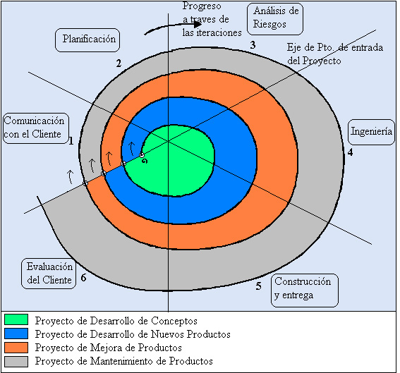

Modelos cascada
Para cada una de las fases o etapas listadas en el ítem anterior, existen sub-etapas (o tareas). El modelo de proceso o modelo de ciclo de vida utilizado para el desarrollo, define el orden de las tareas o actividades involucradas,6 también define la coordinación entre ellas, y su enlace y realimentación. Entre los más conocidos se puede mencionar: modelo en cascada o secuencial, modelo espiral, modelo iterativo incremental. De los antedichos hay a su vez algunas variantes o alternativas, más o menos atractivas según sea la aplicación requerida y sus requisitos.

Modelos evolutivos
El software evoluciona con el tiempo.11 9 Los requisitos del usuario y del producto suelen cambiar conforme se desarrolla el mismo. Las fechas de mercado y la competencia hacen que no sea posible esperar a poner en el mercado un producto absolutamente completo, por lo que se aconsejable introducir una versión funcional limitada de alguna forma para aliviar las presiones competitivas.
En esas u otras situaciones similares los desarrolladores necesitan modelos de progreso que estén diseñados para acomodarse a una evolución temporal o progresiva, donde los requisitos centrales son conocidos de antemano, aunque no estén bien definidos a nivel detalle.
En el modelo cascada y cascada realimentado no se tiene demasiado en cuenta la naturaleza evolutiva del software, se plantea como estático, con requisitos bien conocidos y definidos desde el inicio.
Los evolutivos son modelos iterativos, permiten desarrollar versiones cada vez más completas y complejas, hasta llegar al objetivo final deseado; incluso evolucionar más allá, durante la fase de operación.
Los modelos «iterativo incremental» y «espiral» (entre otros) son dos de los más conocidos y utilizados del tipo evolutivo.
Modelo iterativo incremental
En términos generales, se puede distinguir, en la Figura 4, los pasos generales que sigue el proceso de desarrollo de un producto software. En el modelo de ciclo de vida seleccionado, se identifican claramente dichos pasos. La descripción del sistema es esencial para especificar y confeccionar los distintos incrementos hasta llegar al producto global y final. Las actividades concurrentes (especificación, desarrollo y validación) sintetizan el desarrollo pormenorizado de los incrementos, que se hará posteriormente.
El diagrama de la Figura 4 muestra en forma muy esquemática, el funcionamiento de un ciclo iterativo incremental, el cual permite la entrega de versiones parciales a medida que se va construyendo el producto final.6 Es decir, a medida que cada incremento definido llega a su etapa de operación y mantenimiento. Cada versión emitida incorpora a los anteriores incrementos las funcionalidades y requisitos que fueron analizados como necesarios.

El incremental es un modelo de tipo evolutivo que está basado en varios ciclos Cascada Realimentados aplicados repetidamente, con una filosofía iterativa.10 En la Figura 5 se muestra un refino del diagrama previo, bajo un esquema temporal, para obtener finalmente el esquema del modelo de ciclo de vida Iterativo Incremental, con sus actividades genéricas asociadas. Aquí se observa claramente cada ciclo cascada que es aplicado para la obtención de un incremento; estos últimos se van integrando para obtener el producto final completo. Cada incremento es un ciclo Cascada Realimentado, aunque, por simplicidad, en la Figura 5 se muestra como secuencial puro.

Modelo espiral
El modelo espiral fue propuesto inicialmente por Barry Boehm. Es un modelo evolutivo que conjuga la naturaleza iterativa del modelo MCP con los aspectos controlados y sistemáticos del Modelo Cascada. Proporciona potencial para desarrollo rápido de versiones incrementales. En el modelo Espiral el software se construye en una serie de versiones incrementales. En las primeras iteraciones la versión incremental podría ser un modelo en papel o bien un prototipo. En las últimas iteraciones se producen versiones cada vez más completas del sistema diseñado.
El modelo se divide en un número de Actividades de marco de trabajo, llamadas «regiones de tareas». En general existen entre tres y seis regiones de tareas (hay variantes del modelo). En la Figura 6 se muestra el esquema de un Modelo Espiral con 6 regiones. En este caso se explica una variante del modelo original de Boehm, expuesto en su tratado de 1988; en 1998 expuso un tratado más reciente.
